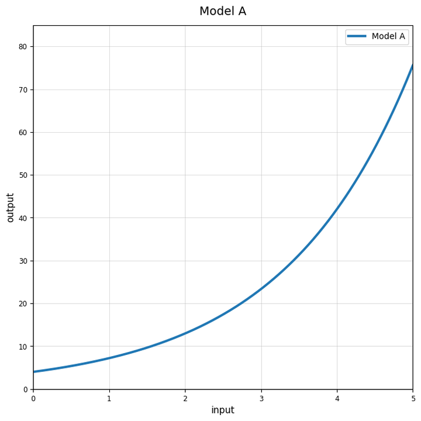
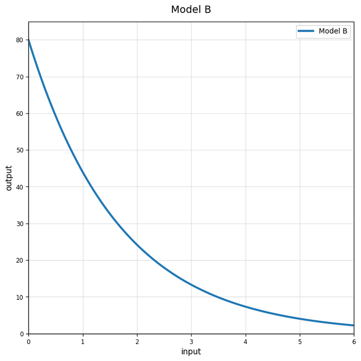
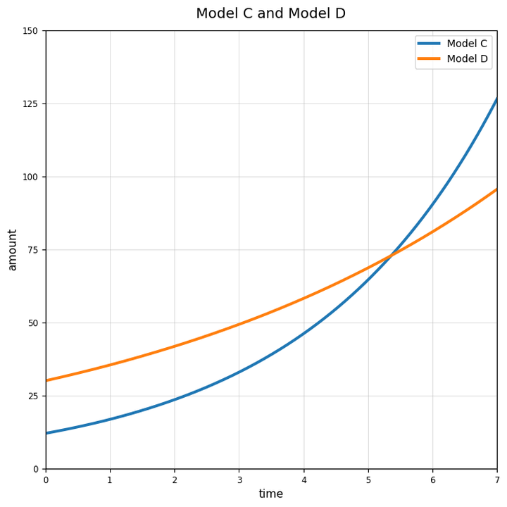
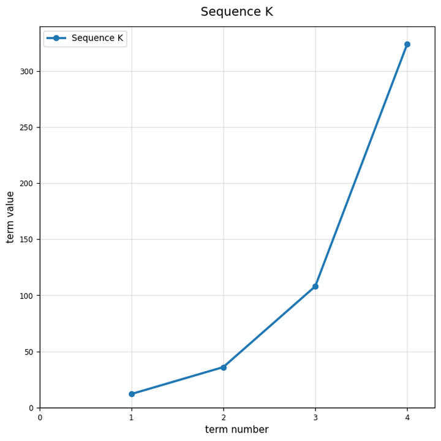
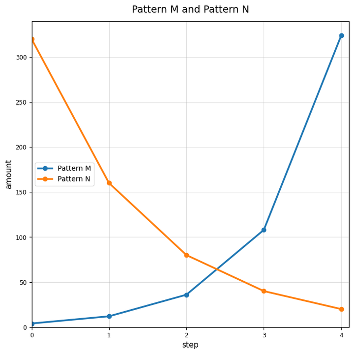

Use the graph of Model A. Does the relationship show growth or decay? Explain how the graph shows it.

Use Model B. Estimate the starting output when the input is $0$.

Complete the table for $f(x)=3(2)^x$. Then describe the shape you would expect when the points are graphed.
| $x$ | 0 | 1 | 2 | 3 | 4 |
|---|---|---|---|---|---|
| $f(x)$ |
Use Model C and Model D. Which model starts higher? Which model appears to grow faster later? Use graph evidence.

For $y=9(1.5)^x$, identify the initial value and multiplier.
A quantity decreases by $22$ percent each year. What multiplier should be used?
For $P(t)=120(0.75)^t$, identify whether the model shows growth or decay.
A quantity increases by $6$ percent each year. Write the growth factor.
Write an equation of the form $y=a(b)^x$ for the table.
| $x$ | 0 | 1 | 2 | 3 |
|---|---|---|---|---|
| $y$ | 7 | 21 | 63 | 189 |
Use Sequence K to write a possible explicit equation. Explain how the graph supports your equation.

A student says the table below is modeled by $y=2(5)^x$ because the outputs are multiplied by $5$. Critique the model and correct it if needed.
| $x$ | 0 | 1 | 2 | 3 |
|---|---|---|---|---|
| $y$ | 5 | 25 | 125 | 625 |
Create a table, equation, and short context for an exponential decay relationship. Explain how someone can verify that all three representations match.
Classify the pattern as linear, exponential, or neither: $6, 12, 24, 48, \ldots$
Classify the pattern as growth or decay: $96, 48, 24, 12, \ldots$
Find the common multiplier in $10, 15, 22.5, 33.75, \ldots$.
Use Pattern M and Pattern N. Identify which pattern shows growth and which shows decay. Use evidence from the graph.
